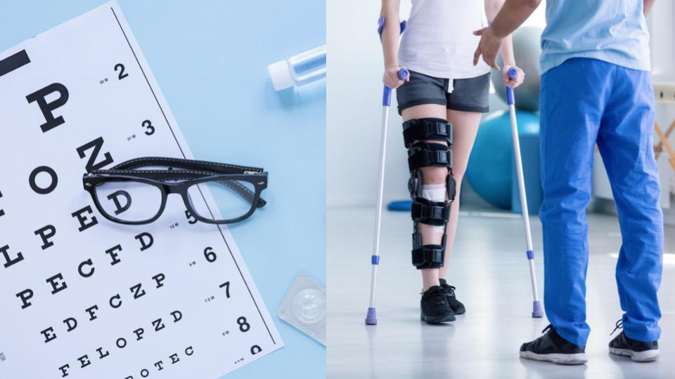
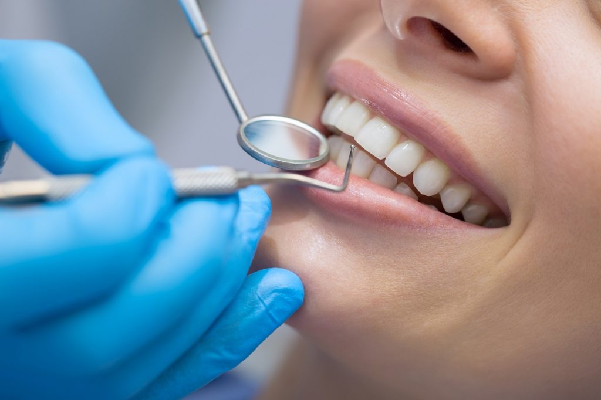

Especialidades Médicas
¿Cuándo fue la última vez que realizaste un chequeo de rutina? Recuerda que es importante visitar un especialista una vez al año.
- Cardiología
- Clínica Médica
- Gastroenterología
- Ginecología
- Oftalmología
- Pediatría
- Traumatología
Estudios de laboratorio
Análisis clínicos con lo último en tecnología que le ofrecen rapidez y seguridad en el diagnóstico.
- Colesterolemia/Trigliceridemia
- Glucemia
- Perfil hormonal
- Hemograma
- Examen de orina completo
- Examen parasitológico
- Microbiología

Estudios por imágenes
Diagnóstico a través de equipos tecnológicos de última generación y sin abonar copagos.
- Endoscopía
- Colonoscopía
- Rayos X
- Ecografías 2D y 3D
- Mamografía
- Densitometría ósea

Red de Ópticas y Ortopedia
Acceda a los artículos ópticos y ortoprotésicos correspondientes a su plan (por año calendario).
- Un anteojo completo
- Un par de plantillas
- Descuentos en tratamientos prolongados
Red de Farmacias
Atención profesional permanente con orientación e información sobre medicamentos recetados, uso adecuado y posibles contraindicaciones.
- Descuentos en medicamentos genéricos
- Vacunatorios

Servicios Odontológicos
Servicio integral en el tratamiento de sus dolencias en encías y dientes. No abona copago.
- Periodoncia
- Endodoncia
- Odontopediatría
- Ortodoncia
- Estética Dental
- Rehabilitación Oral